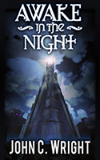

The Night Land Journal
Grey Dog Tales has an interview with actor Dan Starkey, who's recently given an audio performance as Carnacki.
Previous articles over there this month concern Lovecraftianian fiction and more amusing canine material.
- Details
- Written by Kate Coady
- Category: News
Oldstyle Tales Press are publishing an annual anthology of horror, ghost stories and weird fiction called The Yellow Booke. You can download the PDFs for free, or buy the books at Amazon. There are two volumes available, for 2014 and 2015.
Volume II (the 2015 book) has a Carnacki story by Taral Wayne. I'm posting before I've had a chance to read it, but the opening looks promising and I'm looking forward to it.
- Details
- Written by Kate Coady
- Category: News
John Linwood Grant of Grey Dog Tales has finished up a month-long celebration of William Hope Hodgson with several posts of interest.
The Writer on the Borderland 9: An Editor Calls has, among other things:
- A link to Alfred Hitchcock's production of Mr. Hodgson's sea horror story "A Voice in the Night";
- Links and reproduced critical material;
- A reprint of James Bojaciuk's essay "A Concluding Oink", from Sargasso: The Journal of William Hope Hodgson Studies No. 2, discussing the Hog (from the Carnacki story) and the swine-things from The House on the Borderland.
The Writer on the Borderland 10: He's Alive, Jim includes:
- "The Strange Case of the Books in the Night", an essay by Sam Gafford explaining how H. C. Koenig's efforts prevented Mr. Hodgson's work from being forgotten. (Mr. Koenig is mentioned in H. P. Lovecraft's letters for loaning Mr. Hodgson's books.)
- Another essay by Mr. Bojaciuk discussing the identity of Thomas Carnacki's father.
William Hope Hodgson 11: Critical Voices includes:
- An interesting interview with Sam Gafford
The Writer on the Borderland 12: All Hallows' Exhaustion includes:
- A link to three Carnacki audiobooks narrated by David Ian Davies and published by Blackstone Audio.
Blackstone Audio has another Carnacki story and The Night Land too, for surprisingly affordable prices.
Grey Dog Tales also has a gallery of cover art for Mr. Hodgson's works, and in many cases, his photos are of less-beat-up books than ours are.
Incidentally, Mr. Grant's longdog posts are frequently hilarious.
- Details
- Written by Kate Coady
- Category: News
Grey Dog Tales has an interview with author John C. Wright, in which they discuss William Hope Hodgson's The Night Land and The House on the Borderland, and Mr. Wright's Night Land stories. If you're familiar with this site, you'll know those stories were originally published here by the late Andy Robertson. They've since been republished in a collection called Awake in the Night Land, published by Castalia House.
Mr. Wright's remarks are well worth the reading, as one might expect.
- Details
- Written by Kate Coady
- Category: News
Grey Dog Tales' celebration of William Hope Hodson continues with a gracious mention of the Night Land website, and other items of interest, including interviews with Chico Kidd (A.F. Kidd) and William Meikle, and a new Carnacki story by J. Patrick Allen.
Carnacki readers may remember Ms. Kidd and Rick Kennett as the authors of No. 472 Cheyne Walk: Carnacki, the Untold Stories, published by Ash Tree Press — a collection of Carnacki pastiche. The stories include incidents Carnacki referred to in Mr. Hodgson's original tales, but were never related in full.
William Meikle has also published Carnacki stories, in two volumes: Carnacki: Heaven and Hell, from Dark Regions Press, and Carnacki: The Watcher at the Gate, from Dark Renaissance Books. The latter is currently published in a hardcover edition. eBook and paper are apparently planned but not yet available.
- Details
- Written by Kate Coady
- Category: News
William Meikle, who has published other Carnacki stories I'll mention later, has written a novella, Pentacle. The teaser reads:
There are houses like this all over the world. Most people only know of them from whispered stories over campfires; tall tales told to scare the unwary. But some—those who suffer—know better. They are drawn to these places to ease their pain. If you have the will, the fortitude, you can peer into another life, where the dead are not gone, where your love might live forever.
But that’s not the case for the residents of the Edinburgh house, for something has disturbed the quiet reflection in that old building. A creature has slipped through, sniffling and snuffling in all the dark places, disrupting the balance of time and space.
And it's John’s job to fix it…by any means necessary.
The titular pentacle is one some of you will have read about before.
Pentacle is available as an ebook at Amazon and also as a limited edition hardcover. It's published by Dark Fuse.
- Details
- Written by Kate Coady
- Category: News
A German band named AHAB have released a metal album named after William Hope Hodgson's novel The Boats of the Glen Carrig. The genre is described as Nautik Doom on their Facebook page.
They have CDs, vinyl, and assorted shirts, jackets, and bags with strange creatures, giant squids, etc. at their shop.
- Details
- Written by Kate Coady
- Category: News